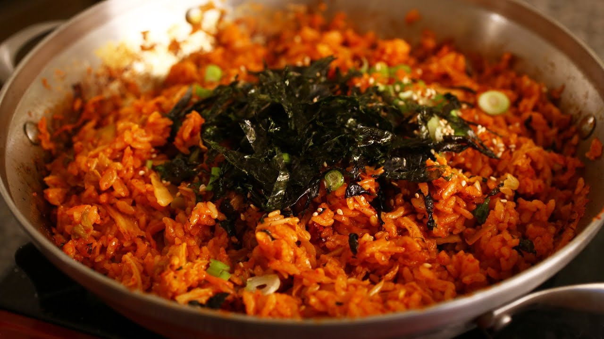

~ MAIN DISH ~
Discover irresistible main courses that redefine culinary excellence.
Kimchi-bokkeumbapKimchi fried rice or kimchi-bokkeum-bap is a variety of bokkeum-bap ("fried rice"), a popular dish in South Korea. Kimchi fried rice is made primarily with kimchi and rice, along with other available ingredients, such as diced vegetables or meats like Spam. |
 |
DakgalbiDak-galbi, or spicy stir-fried chicken, is a popular South Korean dish made by stir-frying marinated diced chicken in a gochujang-based sauce with sweet potatoes, cabbage, perilla leaves, scallions, tteok (rice cake), and other ingredients. |

|
Mandu-gukMandu-guk or dumpling soup is a variety of Korean soup (guk) made by boiling mandu (dumplings) in a beef broth or anchovy broth mixed with beaten egg. |